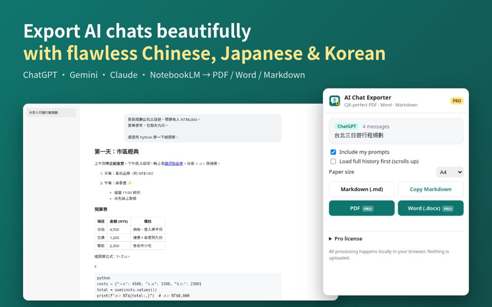
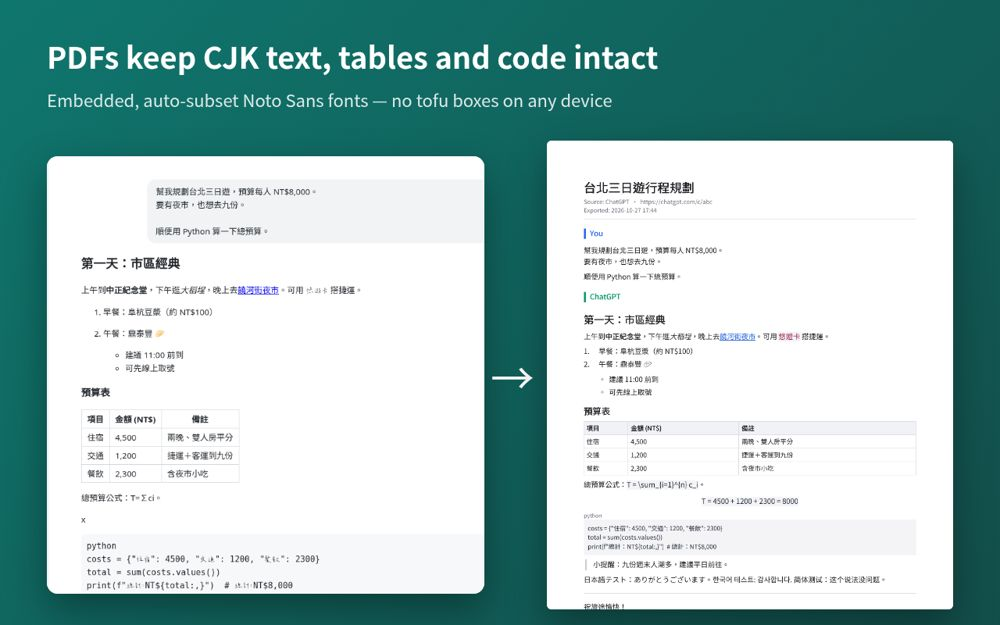

AI Chat Exporter (CJK)
AI 對話匯出 – 中文不亂碼
Export ChatGPT, Gemini, Claude & NotebookLM chats to Markdown, PDF & Word. CJK text never turns into boxes. 100% local.
Save your AI conversations as clean, shareable documents — with Chinese, Japanese and Korean text that actually renders. Most "export to PDF" tools print CJK characters as empty boxes (□□□, "tofu") or break lines in the middle of words. AI Chat Exporter ships its own Noto Sans fonts and embeds just the characters you use, so your PDF looks the same on every phone, laptop and printer.
Works on: ChatGPT · Google Gemini · Claude · NotebookLM (citations kept as [1][2])
- Markdown — free, unlimited. Download or copy to clipboard.
- PDF — A4 or Letter, page numbers, proper CJK line-breaking, tables, code blocks, quotes, links. (Pro)
- Word (.docx) — editable headings, lists, tables and code. (Pro)
Try PDF and Word free 3 times. Keeps headings, nested lists, tables, code blocks, quotes, links, inline math (as TeX), emoji, and who said what.
Private by design: everything happens inside your browser — your chats are never uploaded. No account, no analytics, no tracking. Only runs on the five supported AI sites.
Pro: US$4.99 one-time (no subscription).
把 ChatGPT、Gemini、Claude、NotebookLM 對話匯出成 Markdown、PDF、Word。中日韓文字不再變豆腐框，完全本機處理。
把 AI 對話存成乾淨、好分享的文件，而且中文、日文、韓文真的印得出來。很多「匯出 PDF」工具遇到中文就變成一排空白方框（□□□，俗稱豆腐字），或在詞中間亂斷行。AI 對話匯出內建 Noto Sans 字型，只嵌入你用到的字，手機、電腦、印表機打開都一樣。
支援網站：ChatGPT · Google Gemini · Claude · NotebookLM（保留 [1][2] 引用標記）
- Markdown：免費、不限次數，可下載或複製到剪貼簿。
- PDF：A4 或 Letter、頁碼、中文避頭尾斷行、表格、程式碼、引言、連結。（Pro）
- Word（.docx）：可編輯的標題、清單、表格、程式碼。（Pro）
PDF 與 Word 可免費試用 3 次。完整保留標題、巢狀清單、表格、程式碼、引言、連結、數學式（TeX）、emoji，以及誰說了什麼。
重視隱私：全部在你的瀏覽器裡完成，對話不會上傳。不用帳號、沒有分析、沒有追蹤，只在 5 個支援的 AI 網站上運作。
Pro：一次買斷 US$4.99（不用訂閱）。


Not affiliated with OpenAI, Google or Anthropic. ChatGPT, Gemini, NotebookLM and Claude are trademarks of their respective owners.本產品與 OpenAI、Google、Anthropic 無關。ChatGPT、Gemini、NotebookLM、Claude 為各自所有者之商標。 Privacy policy隱私權政策